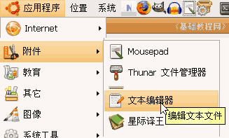
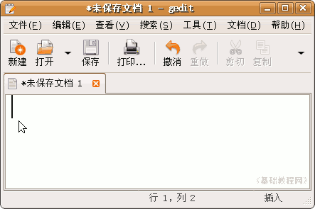
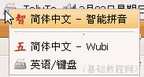
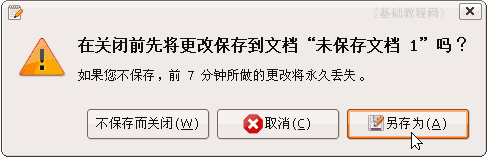
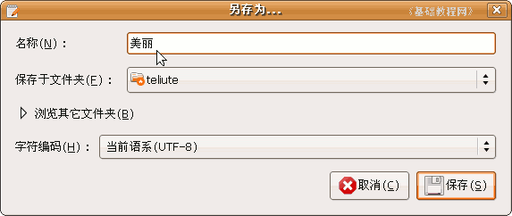

SCIM输入法操作基础
一、使用SCIM 返回目录
安装好SCIM中文输入法以后，就可以在文本框里面输入中文了，可以使用拼音也可以使用五笔输入法，下面我们来 看一个练习；
1、打开文本编辑器
1）在上面的面板栏点菜单“应用程序－附件－文本编辑器”，打开一个文档窗口；
2）在出来的窗口中，有一个一闪一闪的竖线，这个是光标插入点，表示可以输入文字了；
3）在右上角面板栏里的小键盘上点一下，出来一个输入法列表，选择“智能拼音”点一下；

4）这时候输入拼音字母，就会出来一个候选字列表，按空格是输入第一个，还可以按字词前面的数字来选择输入，
按大于号、小于号翻页，也可以按加号(＋)、减号(－)翻页；
输入的时候，可以一个字一个字，也可以一个词语输入，还可以只输入拼音的第一个字母；
5）输入一句“美丽的校园”，点右上角的叉按钮关闭，出来一个保存提示，有用的点“另保存”，没用的点“不保存”；

6）点“另存为”按钮，在出来的保存面板上面，把名称改为“美丽”，点保存按钮完成；

常见的SCIM智能拼音快捷键：Ctrl＋空格中英文切换、Ctrl＋Shift输入法切换、Shift键切换到英文、空格键输入第一个汉字、回车键输入拼音的英文字母、按v后输入英文字母、Ctrl＋点(.)是大小标点切换、 >< +－号翻页；
本节学习了在文本编辑器中输入中文的 基本方法，如果你成功地完成了练习，请继续学习下一课内容；本教程由86团学校TeliuTe制作|著作权所有
基础教程网：http://teliute.org/
美丽的校园……
转载和引用本站内容，请保留版权信息和本站链接。